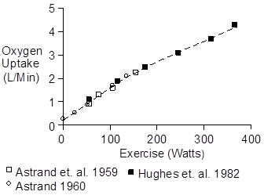
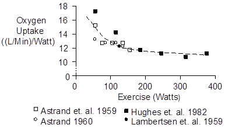
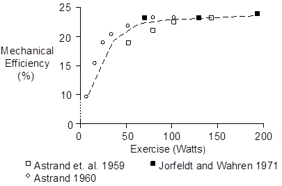
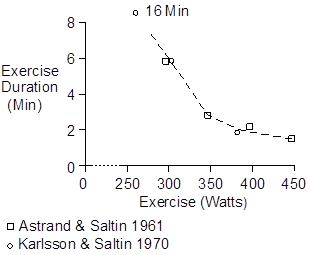
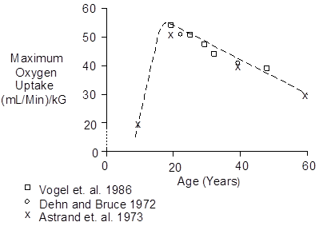
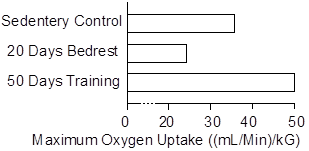

Exercise > Describing Exercise
The title to this page means describing exercise quantitatively.
The most direct way to quantify exercise is to measure the work or average power. This is possible on a bicycle ergometer, but otherwise it is generally not possible.
Oxygen uptake is often measured. It is proportional to the severity of exercise during longer duration protocols (i.e. the protocol is aerobic).
There is a large variation among individuals in the severity of exercise that can be successfully undertaken. This variation depends on a number of factors including size, gender, age and, especially, physical fitness.
Variation among individuals can severely damage group data sets. Some normalization is usually added by expressing oxygen uptake in terms of percent of maximum oxygen uptake.
 Oxygen Consumption During Exercise
Oxygen Consumption During Exercise
Oxygen consumption increases linearly with the intensity of exercise, as shown below.

The slope of the oxygen uptake curve appears to decrease a bit at higher workloads, as anaerobic metabolism does part of the work. The slope change is shown below.

We can linearize with little error. Using the data of Hughes et. al. (1982) the average increase in oxygen consumption is 11.1 (mL/Min)/Watt.
Exercise intensity of often reported as oxygen uptake. The following formulas translate oxygen uptake (mL/Min) to average power (W) and vice versa.
Power (W) = 0.090 * O2 Uptake (mL/Min) – 22.6
O2 Uptake (mL/Min) = 11.1 Power (W) + 250.0
Most of the oxygen that is consumed goes into heat. A fraction goes into motion. Mechanical efficiency as a function of exercise intensity is shown below (Åstrand et. al. 1959, Åstrand 1960)

A value of 22% mechanical efficiency is typical for strenuous exercise. Using this value, we get the following motion and heat breakdown.
| O2 (mL/Min) | Watts | Cal/Min | |
| Motion | 3.1 | 1.0 | 0.24 |
| Heat | 11.1 | 3.5 | 0.83 |
| Total | 14.2 | 4.5 | 1.07 |
Duration Of Exercise
Long periods of exercise are well tolerated when oxygen uptake is 70% of maximum or less. Heavier loads turn on anaerobic metabolism, deplete glycogen and cause muscle fatigue. Heavier loads end quickly, as shown below.

These data are for a single subject. Oxygen uptake at or near the end of exercise was 4.0 L/Min.
Maximum Oxygen Uptake
Maximum oxygen uptake increases to age 20 and decreases thereafter, as the figure below shows.

Maximum oxygen uptake decreases with bed rest and increases with athletic training, as the figure below shows (Saltin et. al. 1968).

References
Åstrand, I. Aerobic work capacity in men and women with special reference to age. Acta Physiol. Scand. 46(Suppl. 169):1-92, 1960.
Åstrand, I., P.-O. Åstrand, I. Hallbäck and Å. Kilbom. Reduction in maximum oxygen uptake with age. J. Appl. Physiol. 35:649-654, 1973.
Åstrand, I., P.-O. Åstrand and K. Rodahl. Maximum heart rate during work in older men. J. Appl. Physiol. 14:562-566, 1959.
Åstrand, P.-O. and B. Saltin. Oxygen uptake during the first minutes of heavy muscular exercise. J. Appl. Physiol. 16:971-976, 1961.
Dehn, M.M. and R.A. Bruce. Longitudinal variations in maximal oxygen intake with age and activity. J. Appl. Physiol. 33:805-807, 1972.
Hughes, E.F., S.C. Turner and G.A. Brooks. Effects of glycogen depletion and pedaling speed on anaerobic threshold. J. Appl. Physiol. 52:1598-1607, 1982.
Jorfeldt, L. and J. Wahren. Leg blood flow during exercise in man. Clin. Sci. 41:459-473, 1971.
Karlsson, J. and B. Saltin. Lactate, ATP, and CP in working muscles during exhaustive exercise in man. J. Appl. Physiol. 29:598-602, 1970.
Lambertsen, C.J., S.G. Owen, H. Wendel, M.W. Stroud, A.A. Lurie, W. Lochner and G.F. Clark. Respiratory and cerebral circulatory control during exercise at .21 and 2.0 atmospheres inspired pO2. J. Appl. Physiol. 14:966-982, 1959.
Saltin, B., B. Blomqvist, J.H. Mitchell, R.L. Johnson, Jr., K. Wildenthal and C.B. Chapman. Response to submaximal and maximal exercise after bed rest and training. Circulation 38(Suppl 7):1-78, 1968.
Vogel, J.A., J.F. Patton, R.P. Mello and W.L. Daniels. An analysis of aerobic capacity in a large United States population. J. Appl. Physiol. 60:494-500, 1986.